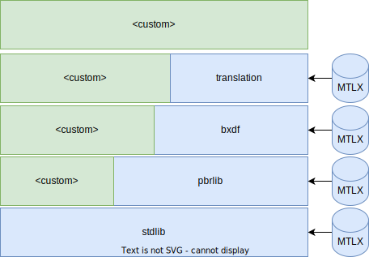
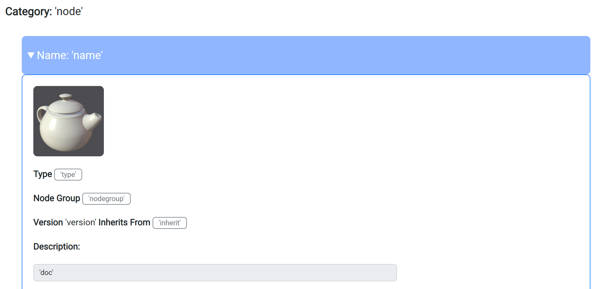
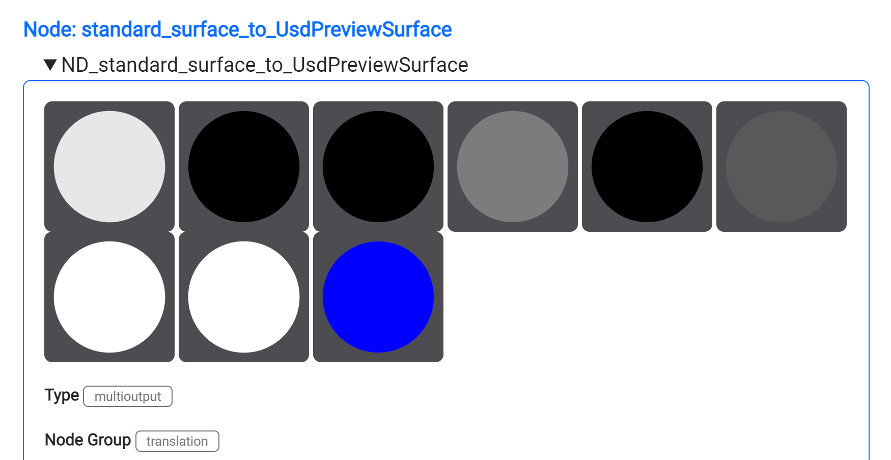
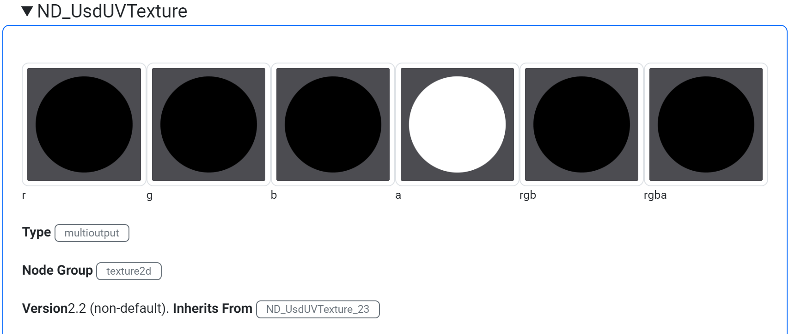

MaterialX ships with definitions which are partitioned into a few semantic categories:
Each set can be thought of as a library. There is not specific "library" format, but instead each file is a MaterialX document.
Shown below are the definition dependencies.
Definitions in higher libraries
depend on definitions in "lower" libraries. Custom definitions can be built using
existing
standard definitions or other
custom definitions. For example the 'pbr' library definitions use 'stdlib' definitions.

In MaterialX a node definition is called a <nodedef>.

Required definition attributes include:For the libraries shipping with
MaterialX a "ND_" prefix is used as a prefix with the
the follow proposed syntax template to provide long term uniqueness:
ND_<node category>_<type>[_<version>]
While it is possible to change this name later on, this can cause issues with dependents that reference this name directly. This includes references for node instances which are stored in a MaterialX document.
Shown below are the preview images for an example definition
with multiple outputs:

An accompanying isdefaultversion attribute should be provided to determine the default definition to instantiate when no explicit version is specified. Versioning is also important to allow for "upgrade" logic support (future-proofing).
The node group (nodegroup) attribute is also recommended as being mandatory. It specifies the semantic used for evaluation including shader code generation. This includes:
The inherit attribute indicates that a definition inherits it's interface from another definition. Inheritance allows for reuse and specialization and may also be used handling version changes. "inherit" should be set to another definition's unique "name".
For example the standard surface
and USD texture definitions use
inheritance. In one case to change the default values for inputs and in the
latter to remove an output from a newer version.

For reference the set of input and output parameter attributes is shown below. This includes all the possible attribute and value variants. The set of attributes for inputs differ from those of outputs.
The required attributes are:
A definition can be implemented either in code or using a functional
node graph. A definition can have a different implementation depending
on shading language target (e.g. OSL). Targets
are provided as part
of the standard definition libraries. The syntax is:
gen_<language name>
A implementation represented as a node graph
is inherently independent of a target (even though any node in graph may be target specific).
The association between a node definition and
a node graph can either be specified via the nodedef
attribute on a node graph or via an
<implementation>
association as of version 1.38.4.
The recommended functional graph name should start with "NG_" and be of the
form:
NG_<node category>_<type>[_<version>]
The following diagram shows the two possible ways implementations can be
associated with definitions. As of 1.38.4 the <implementation> approach
is recommended as it the same way that code associations are specified.
or

For the node definition documentation, diagrams of node graphs are
generated from MaterialX library documents. The conventions for different components
are shown in the sample diagram below:

.input_nameTo retrieve information following are important API classes:
getNodeDefs()
Input and output ports can be inherited from a parent definition. Note that in
MaterialX
terminology, getting active information means to get inherited information.
Corresponding
APIs
having
an "Active" API variants (e.g. getActiveValueElements() vs
getValueElements()).
To get input and output attribute information the follow method is available:
Element::getAttribute(<attribute name>)
The general method to get value information (marked as 'value' in the template) is:
ValueElement::getValue()